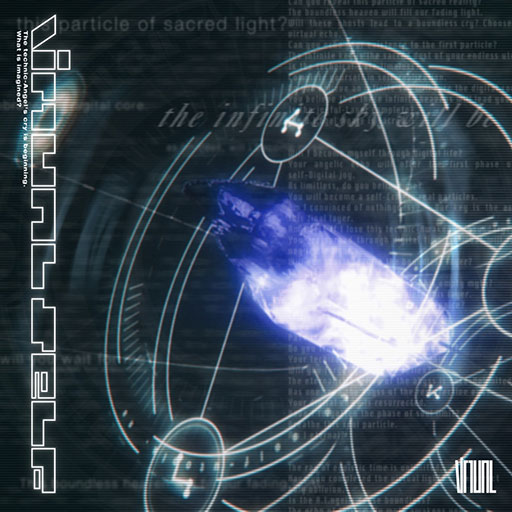

supersaws & piano Y2K
140–160 BPM, kick com sidechain, supersaws, piano melódico de 2002 e vocais pitchados. Parentes: Hands Up, Eurobeat, Happy Hardcore, Hard Trance.
dive in. take flight.

o trance de 2002, visto como um sonho que alguém ainda está tendo.
O EP de 2017 do Porter Robinson reabriu a porta para o trance Y2K. O HYPERTRANCE do nuphory nasceu diretamente dele, e a cena inteira veio atrás.
O lado limpo e luminoso do revival do trance Y2K. Trance moderno com o brilho maximalista do hyperpop, nascido no começo dos anos 2020 entre SoundCloud, Discord e Bandcamp.
140–160 BPM, kick com sidechain, supersaws, piano melódico de 2002 e vocais pitchados. Parentes: Hands Up, Eurobeat, Happy Hardcore, Hard Trance.
Explosões de vidro e luz sobre azul-marinho, ou céu e nuvens com cromo lavanda. Texto técnico minúsculo, colchetes, códigos de catálogo falsos, encarte de CD de 2002.
nuphory, Luna Lenta, Aekae, Type R, crayvxn, Wyste, AUSA, telemist, yuuni, SAM WAITIN. O selo hypertrance se descreve como the ultimate in y2k music and art.